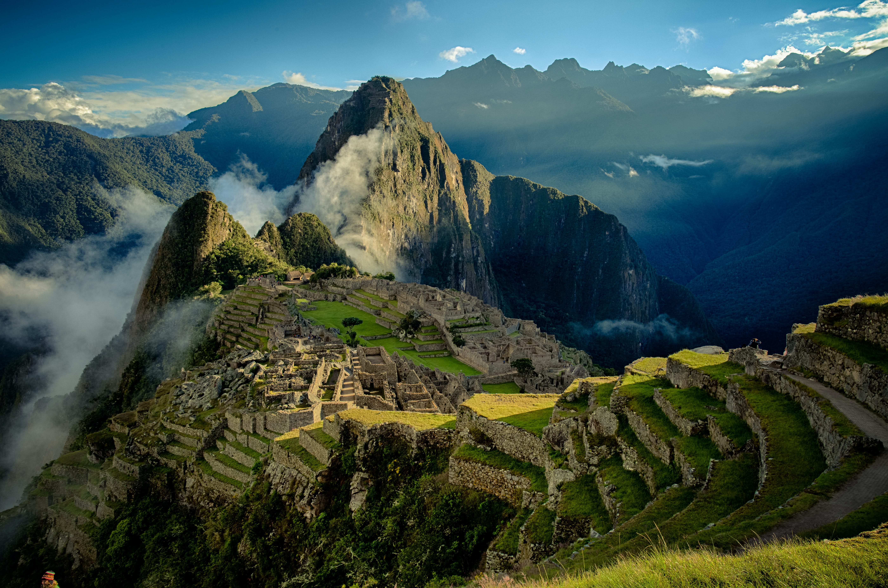
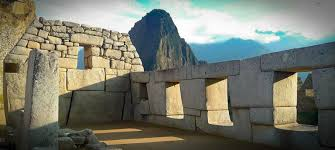
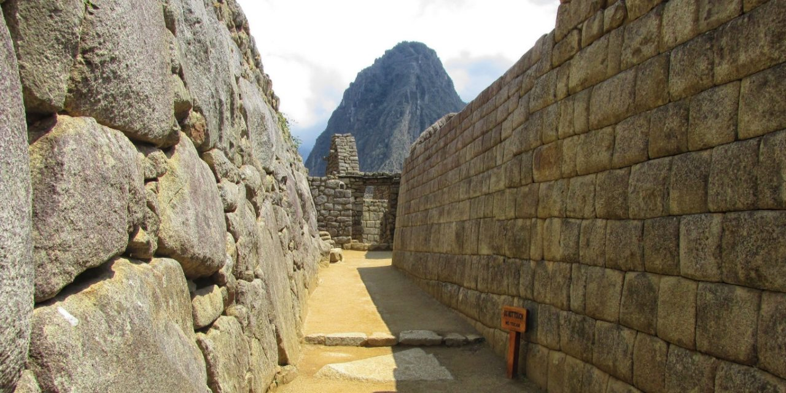

Photo Gallery




Machu Picchu is an ancient Inca citadel located in the Andes Mountains of Peru. It was built in the 15th century by the Inca emperor Pachacuti and later abandoned during the Spanish Conquest. The site is renowned for its breathtaking panoramic views and sophisticated dry-stone construction techniques.
Nestled high in the Andes, Machu Picchu is often referred to as the "Lost City of the Incas." The site includes well-preserved temples, terraced fields, and residential areas, showcasing the advanced engineering and architectural skills of the Inca civilization.
Visitors to Machu Picchu can explore iconic structures such as the Temple of the Sun, Intihuatana stone, and the Room of the Three Windows. The site has been designated as a UNESCO World Heritage Site and is considered one of the New Seven Wonders of the World.
The journey to Machu Picchu often involves a trek along the Inca Trail, providing a unique and immersive experience amid stunning natural landscapes.
Machu Picchu continues to captivate the world with its mystical charm and cultural significance.
| Location | Andes Mountains, Peru | ||||||||||
| Altitude | 2,430 meters (7,970 feet) above sea level | ||||||||||
| Discovery | Rediscovered by Hiram Bingham in 1911 | ||||||||||
| Designation | UNESCO World Heritage Site | ||||||||||
| Architectural Style | Inca Civilization | ||||||||||